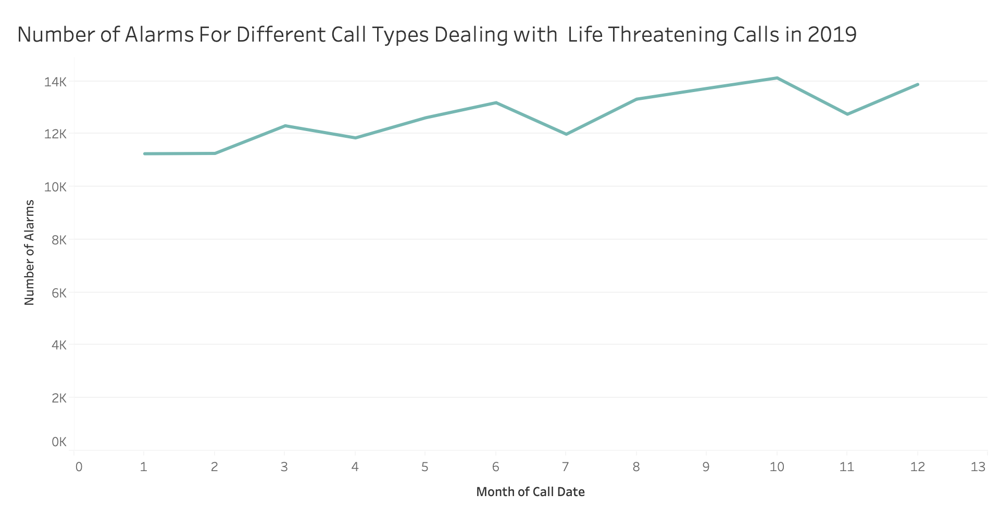

Trending Line Chart: calls type and unit type
By Steven Rokkala
Introduction
The purpose of this graph was designed to show the number of life endangering alarms run in San Francisco from January 2019 to December 2019. From this graph, we can see a trend in the amount of life threatening alarms called through the year.Data
- Number of Alarms The number of alarms.
- Month of Year: The month in the year of 2019
- Call Group Type: Choosing the option -> "Potentially Life Threatening" only
Instructions
The color of line indicates that we are only looking at Potentially Life Threatening calls. We can understand the number of life Threatening alarms is at its peak towards the end of year from the obseravable trend in the graph.
Trending Line Chart Prototype
Here is the chart made by Tableau
And Click Here to View D3 visualization
Click Here
Data Wrangling
To cut the huge dataset down I decided to only use the cases in highest seriousness: Potentially Life Threatening Alarms. Since this graph analyzes cases in 2019, I only used data from the year 2019.
Connection to project themes
The visualization chart on this page demonstrates how many of the most serious cases are happening every month in San Fracisco. It is important to note that, it is impossible to predict for sure when we will need more firefighters and when we will not, this graph could help estimate when more firefighters will be needed and when are less needed.